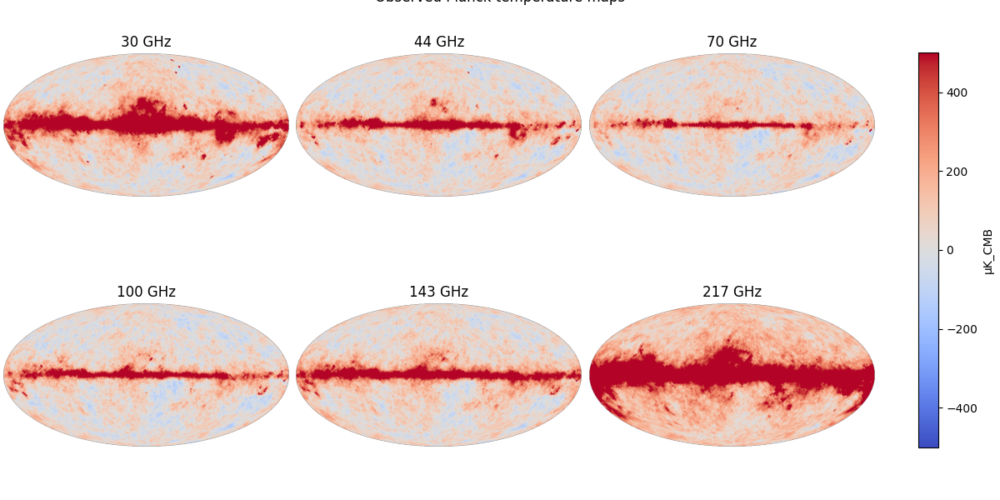
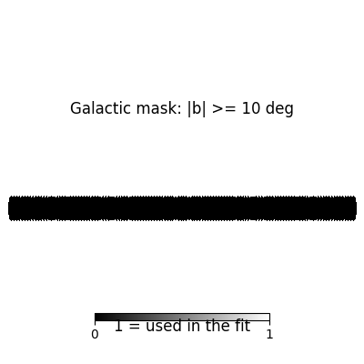
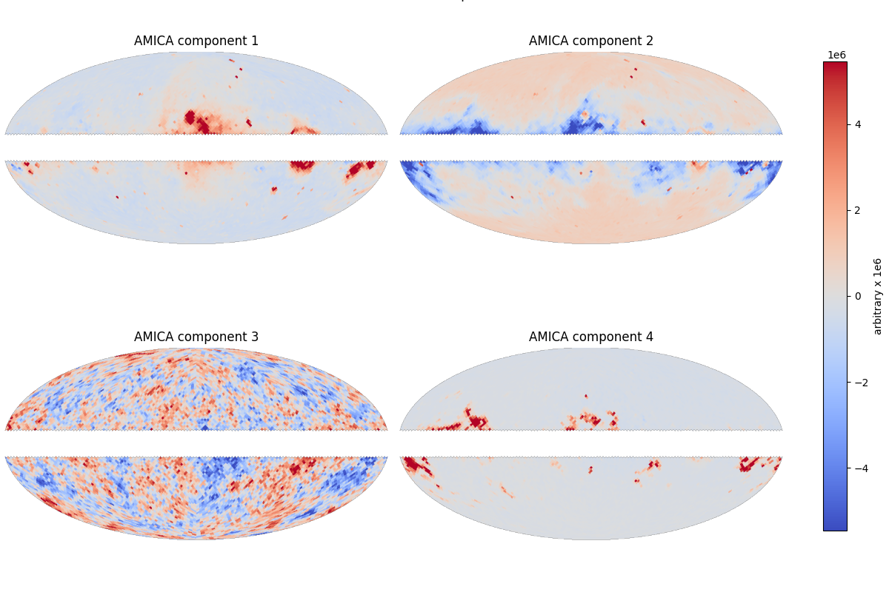
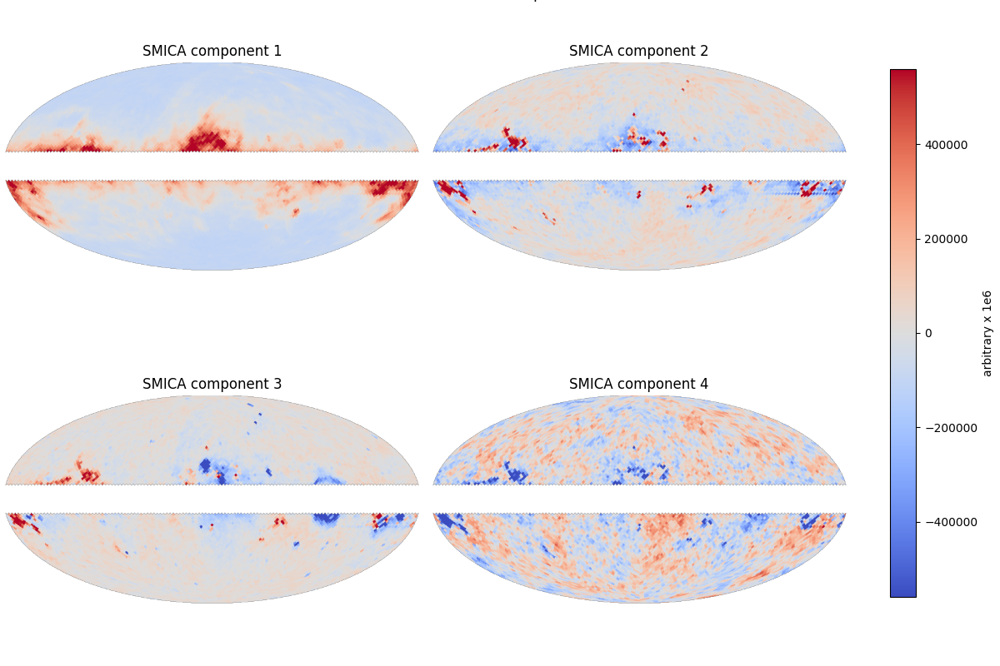
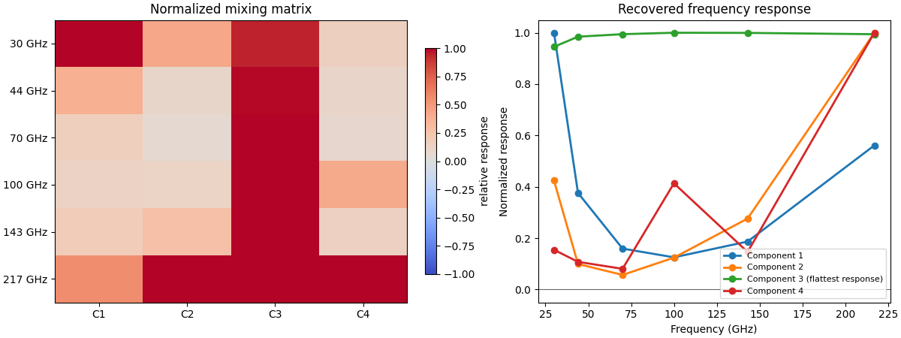
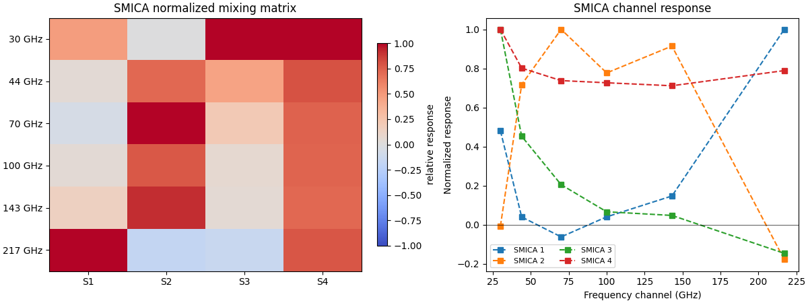

Note
Go to the end to download the full example code.
Isolate Cosmic Microwave Background with ICA¶
In cosmological analyses, ICA is used to separate Cosmic Microwave Background (CMB) from foreground emissions (thermal dust, synchrotron radiation etc.). The CMB is the signal of interest, while Galactic foregrounds act as contaminants.
This example uses a small, low-frequency subset of public Planck PR3 temperature maps, made available by CalTech’s IPAC project. We will apply AMICA to the temperature maps, and compare it to the SMICA ICA algorithm, which historically has been the preferred ICA algorithm for this use-case.
Caution
To keep this example lightweight, we use a small subset of public Planck maps, heavily downgrade them, and restrict ICA to 4 components. Publication quality analyses require much more careful treatment of foregrounds and systematics; see the 2015 Planck Collaboration results for background and scientific context.
Imports¶
import math
import matplotlib.pyplot as plt
import numpy as np
from amica import AMICA
from amica.utils import fetch_planck_temperature_maps
from smica import SMICA
import healpy as hp
Configuration¶
We keep the configuration near the top so it is easy to change the HEALPix resolution or the set of input channels while keeping the example lightweight.
NSIDE = 32
FREQUENCIES_GHZ = (30, 44, 70, 100, 143, 217)
GALACTIC_LATITUDE_CUT_DEG = 10.0
N_COMPONENTS = 4
RANDOM_STATE = 0
def load_low_resolution_temperature_map(filename, nside):
"""Read the temperature field and downgrade it to a common low resolution."""
raw_map = hp.read_map(filename, field=0, dtype=np.float64)
return hp.ud_grade(
raw_map,
nside_out=nside,
order_in="RING",
order_out="RING",
power=0,
)
def build_galactic_mask(nside, latitude_cut_deg):
"""Mask the bright Galactic plane using a simple latitude threshold."""
npix = hp.nside2npix(nside)
lon_deg, lat_deg = hp.pix2ang(nside, np.arange(npix), lonlat=True)
del lon_deg
return np.abs(lat_deg) >= latitude_cut_deg
def component_display_limits(component_map, valid_pixels):
"""Choose symmetric plotting limits from the unmasked sky."""
scale = np.percentile(np.abs(component_map[valid_pixels]), 99)
return -scale, scale
def normalize_frequency_response(mixing_matrix):
"""Normalize and sign-align the mixing matrix for easier visual comparison."""
response = mixing_matrix.copy()
reference_index = np.argmax(np.abs(response), axis=0)
signs = np.sign(response[reference_index, np.arange(response.shape[1])])
signs[signs == 0] = 1.0
response *= signs
response /= np.maximum(np.max(np.abs(response), axis=0, keepdims=True), 1e-12)
return response
def find_most_cmb_like_component(mixing_matrix):
"""Return the component whose frequency response is flattest across channels."""
response = normalize_frequency_response(mixing_matrix)
return int(np.argmin(np.std(response, axis=0)))
Download and preprocess Planck maps¶
The original Planck maps are stored at high HEALPix resolution. We downgrade early to keep the example compact and fast.
map_paths = fetch_planck_temperature_maps(FREQUENCIES_GHZ)
maps = np.vstack(
[
load_low_resolution_temperature_map(map_paths[frequency_ghz], nside=NSIDE)
for frequency_ghz in FREQUENCIES_GHZ
]
)
mask = build_galactic_mask(NSIDE, GALACTIC_LATITUDE_CUT_DEG)
valid_pixels = mask.copy()
X = maps[:, valid_pixels].T
channel_means = X.mean(axis=0, keepdims=True)
X -= channel_means
print(f"Using {valid_pixels.sum()} unmasked pixels out of {valid_pixels.size}.")
X_smica = X.T
Using 10112 unmasked pixels out of 12288.
Visualize the observed frequency maps¶
These maps are images of the entire sky as seen from earth. Taken produced from the Planck satellite. They are a full-sky measurement of microwave intensity (i.e. temperature) at a specific frequency, projected onto a sphere.
ncols = 3
nrows = math.ceil(len(FREQUENCIES_GHZ) / ncols)
fig, axes = plt.subplots(nrows, ncols, figsize=(4 * ncols, 3 * nrows),
constrained_layout=True)
axes = axes.ravel()
vmin, vmax = -500, 500 # consistent scale across all panels
for panel_index, frequency_ghz in enumerate(FREQUENCIES_GHZ):
map_uK = 1e6 * maps[panel_index]
projected = hp.mollview(
map_uK,
title="",
unit="",
cmap="coolwarm",
min=vmin,
max=vmax,
cbar=False,
return_projected_map=True,
)
plt.close() # discard healpy's temporary figure
ax = axes[panel_index]
im = ax.imshow(
projected,
origin="lower",
cmap="coolwarm",
vmin=vmin,
vmax=vmax,
)
ax.set_title(f"{frequency_ghz} GHz")
ax.axis("off")
fig.suptitle("Observed Planck temperature maps", y=1.02)
fig.colorbar(
im,
ax=axes.tolist(),
shrink=0.8,
label="μK_CMB",
)
fig.show()

Beautiful! The bright horizontal band in the center of the maps are the Galactic plane, i.e. microwave emissions from our own Milky Way. For the purpose of a CMB analysis, we are not interested in this signal and will exclude it from ICA.
Plot the simple Galactic mask¶
fig = plt.figure(figsize=(4, 4))
hp.mollview(
mask.astype(float),
fig=fig.number,
title=f"Galactic mask: |b| >= {GALACTIC_LATITUDE_CUT_DEG:.0f} deg",
unit="1 = used in the fit",
cmap="gray",
min=0,
max=1,
)
fig.show()

= 10 deg" class = "sphx-glr-single-img"/>/home/circleci/project/amica-python/.venv/lib/python3.11/site-packages/healpy/visufunc.py:223: UserWarning: Ignoring specified arguments in this call because figure with num: 1 already exists
f = pylab.figure(fig, figsize=(8.5, 5.4))
Fit ICA¶
Each HEALPix pixel is treated as one sample and the different frequency channels are the observed mixtures.
AMICA¶
amica = AMICA(
n_components=N_COMPONENTS,
mean_center=False,
whiten="zca",
max_iter=80,
tol=1e-4,
random_state=RANDOM_STATE,
verbose=0,
)
sources = amica.fit_transform(X)
mixing_matrix = amica.mixing_
print(f"AMICA finished after {amica.n_iter_} iterations.")
AMICA finished after 80 iterations.
SMICA¶
The smica package expects data with shape
(n_channels, n_samples) and a set of Fourier-bin edges in freqs.
Those are not the physical Planck channel frequencies. Instead, they define
how the masked pixel sequence is partitioned in the frequency domain.
smica_freqs = np.linspace(0.0, 0.5, 25)
smica = SMICA(
n_components=N_COMPONENTS,
freqs=smica_freqs,
sfreq=1.0,
rng=RANDOM_STATE,
).fit(X_smica, em_it=60_000)
smica_sources = smica.compute_sources(method="wiener")
smica_mixing_matrix = smica.A_
print(
f"SMICA fit {len(smica_freqs) - 1} spectral bins "
f"between {smica_freqs[0]:.2f} and {smica_freqs[-1]:.2f}."
)
/home/circleci/project/amica-python/.venv/lib/python3.11/site-packages/smica/_em.py:256: UserWarning: Warning, em algorithm did not converge: criterion 2.36e-04
warnings.warn('Warning, em algorithm did not converge: '
/home/circleci/project/amica-python/.venv/lib/python3.11/site-packages/smica/_em.py:92: NumbaPerformanceWarning: np.dot() is faster on contiguous arrays, called on (Array(float64, 2, 'C', False, aligned=True), Array(float64, 2, 'A', False, aligned=True))
op[i] = np.dot(A[i], B[i])
SMICA fit 24 spectral bins between 0.00 and 0.50.
Visualize the recovered components on the sky¶
component_maps = np.full((N_COMPONENTS, mask.size), hp.UNSEEN)
component_maps[:, valid_pixels] = sources.T
AMICA¶
fig, axes = plt.subplots(2, 2, figsize=(12, 8), constrained_layout=True)
axes = axes.ravel()
for component_index in range(N_COMPONENTS):
comp = component_maps[component_index].copy()
comp[~valid_pixels] = np.nan
vmin, vmax = component_display_limits(comp, valid_pixels)
# Ask healpy for the projected 2D map without relying on subplot state
projected = hp.mollview(
1e6 * comp,
title="",
unit="",
cmap="coolwarm",
badcolor="white",
min=1e6 * vmin,
max=1e6 * vmax,
cbar=False,
return_projected_map=True,
)
plt.close() # close the temporary healpy-created figure
ax = axes[component_index]
im = ax.imshow(projected, origin="lower", cmap="coolwarm",
vmin=1e6 * vmin, vmax=1e6 * vmax)
ax.set_title(f"AMICA component {component_index + 1}")
ax.axis("off")
fig.suptitle("Recovered latent components (AMICA)", y=1.02)
fig.colorbar(im, ax=axes.tolist(), shrink=0.8, label="arbitrary x 1e6")
fig.show()

SMICA¶
smica_component_maps = np.full((N_COMPONENTS, mask.size), hp.UNSEEN)
smica_component_maps[:, valid_pixels] = smica_sources
fig, axes = plt.subplots(2, 2, figsize=(12, 8), constrained_layout=True)
axes = axes.ravel()
for component_index in range(N_COMPONENTS):
comp = smica_component_maps[component_index].copy()
comp[~valid_pixels] = np.nan
vmin, vmax = component_display_limits(comp, valid_pixels)
projected = hp.mollview(
1e6 * comp,
title="",
unit="",
cmap="coolwarm",
badcolor="white",
min=1e6 * vmin,
max=1e6 * vmax,
cbar=False,
return_projected_map=True,
)
plt.close()
ax = axes[component_index]
im = ax.imshow(
projected,
origin="lower",
cmap="coolwarm",
vmin=1e6 * vmin,
vmax=1e6 * vmax,
)
ax.set_title(f"SMICA component {component_index + 1}")
ax.axis("off")
fig.suptitle("SMICA latent components", y=1.02)
fig.colorbar(im, ax=axes.tolist(), shrink=0.8, label="arbitrary x 1e6")
fig.show()

Inspect the frequency mixing behavior¶
A component that isolates CMB activity often has a comparatively flat response across frequencies, while others tend to have a varying response across frequencies because they emphasize low-frequency Galactic emission or residual structure.
AMICA¶
frequency_response = normalize_frequency_response(mixing_matrix)
cmb_like_component = find_most_cmb_like_component(mixing_matrix)
fig, axes = plt.subplots(1, 2, figsize=(12, 4.5), constrained_layout=True)
image = axes[0].imshow(
frequency_response,
aspect="auto",
cmap="coolwarm",
vmin=-1,
vmax=1,
)
axes[0].set_xticks(np.arange(N_COMPONENTS))
axes[0].set_xticklabels([f"C{idx + 1}" for idx in range(N_COMPONENTS)])
axes[0].set_yticks(np.arange(len(FREQUENCIES_GHZ)))
axes[0].set_yticklabels([f"{frequency_ghz} GHz" for frequency_ghz in FREQUENCIES_GHZ])
axes[0].set_title("Normalized mixing matrix")
fig.colorbar(image, ax=axes[0], shrink=0.8, label="relative response")
for component_index in range(N_COMPONENTS):
label = f"Component {component_index + 1}"
if component_index == cmb_like_component:
label += " (flattest response)"
axes[1].plot(
FREQUENCIES_GHZ,
frequency_response[:, component_index],
marker="o",
linewidth=2,
label=label,
)
axes[1].axhline(0.0, color="black", linewidth=0.8, alpha=0.6)
axes[1].set_xlabel("Frequency (GHz)")
axes[1].set_ylabel("Normalized response")
axes[1].set_title("Recovered frequency response")
axes[1].legend(loc="best", fontsize=8)
fig.show()

SMICA¶
smica_response = normalize_frequency_response(smica_mixing_matrix)
fig, axes = plt.subplots(1, 2, figsize=(12, 4.5), constrained_layout=True)
image = axes[0].imshow(
smica_response,
aspect="auto",
cmap="coolwarm",
vmin=-1,
vmax=1,
)
axes[0].set_xticks(np.arange(N_COMPONENTS))
axes[0].set_xticklabels([f"S{idx + 1}" for idx in range(N_COMPONENTS)])
axes[0].set_yticks(np.arange(len(FREQUENCIES_GHZ)))
axes[0].set_yticklabels([f"{frequency_ghz} GHz" for frequency_ghz in FREQUENCIES_GHZ])
axes[0].set_title("SMICA normalized mixing matrix")
fig.colorbar(image, ax=axes[0], shrink=0.8, label="relative response")
for component_index in range(N_COMPONENTS):
axes[1].plot(
FREQUENCIES_GHZ,
smica_response[:, component_index],
marker="s",
linestyle="--",
linewidth=1.5,
label=f"SMICA {component_index + 1}",
)
axes[1].axhline(0.0, color="black", linewidth=0.8, alpha=0.6)
axes[1].set_xlabel("Frequency channel (GHz)")
axes[1].set_ylabel("Normalized response")
axes[1].set_title("SMICA channel response")
axes[1].legend(loc="best", fontsize=8, ncols=2)
fig.show()

Total running time of the script: (0 minutes 49.171 seconds)